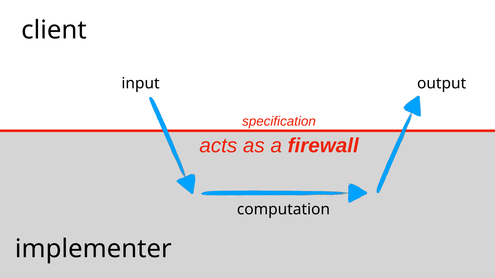
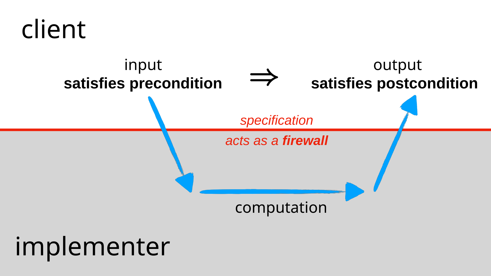
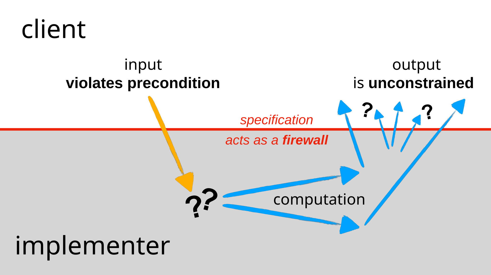
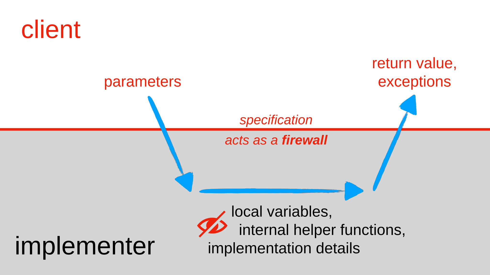
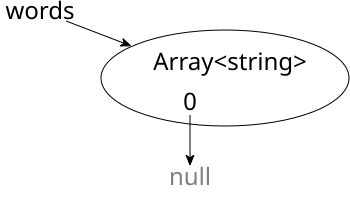

阅读 4：规格说明
Praxis Tutor 练习
通过在 Praxis Tutor 中完成以下类别来继续推进 TypeScript 的学习：

6.102 中的软件
| 免受 bug 困扰 | 易于理解 | 适应变化 |
|---|---|---|
| 今天正确，在未来未知的情况下也正确。 | 与未来的程序员（包括未来的你自己）清晰地沟通。 | 设计为无需重写即可适应变化。 |
学习目标
引言
规格说明是团队协作的核心。 如果没有规格说明，就不可能委托他人来实现一个函数。 规格说明充当一份契约：实现者负责满足契约，而使用该函数的客户端可以依赖这份契约。 事实上，我们将看到，就像真正的法律契约一样，规格说明对双方都提出了要求：当规格说明包含前置条件时，客户端同样负有责任。
在本次阅读中，我们将探讨函数规格说明所扮演的角色。 我们将讨论前置条件和后置条件分别是什么，以及它们对函数的实现者和客户端意味着什么。 我们还将讨论如何使用异常——这是一种重要的语言特性，不仅存在于 TypeScript 中，也存在于 Python、Java 以及许多其他现代语言中——它使我们能够令函数的接口更加安全且更易于理解。
行为等价性
假设你正在编写一个包含如下函数的程序，该函数用于查找整数在数组中的索引：
function find(arr: Array<number>, val: number): number {
for (let i = 0; i < arr.length; i++) {
if (arr[i] === val) return i;
}
return -1;
}这个 find 函数在程序中有许多客户端（调用该函数的地方）。
你刚刚意识到，在这个程序中，当 find 被传入一个大数组时，找到的值通常要么靠近数组开头（查找速度很快），要么靠近数组末尾（查找速度非常慢，因为几乎需要检查整个数组）。
所以你有一个聪明的想法：从数组两端同时搜索，以加快速度：
function find(arr: Array<number>, val: number): number {
for (let i = 0, j = arr.length-1; i <= j; i++, j--) {
if (arr[i] === val) return i;
if (arr[j] === val) return j;
}
return -1;
}用新实现替换 find 是否安全？
我们能否在不引入 bug 的情况下进行此更改？
为了确定 行为等价性，我们需要问：是否可以用一种实现替代另一种实现而不影响正确性。
这些实现不仅具有不同的性能特征，对于某些输入，它们实际上具有不同的输出行为。
如果 val 在数组中出现多次，原始的 find 总是返回它出现的最低索引。
但新的 find 可能返回最低索引或最高索引，取决于它先找到哪一个。
然而，当 val 在数组中恰好只出现在一个索引处时，两个实现的行为是相同的：它们都返回该索引。
客户端可能永远不会依赖该情况之外的行为。
每当他们调用该函数时，传入的数组中都恰好有一个元素匹配 val。
对于这样的客户端，这两个版本的 find 是相同的，我们可以从一个实现切换到另一个实现而不会出现问题。
行为等价性的概念取决于观察者——也就是说，取决于客户端。 为了使替换一个实现成为可能，并知道何时这种替换是可接受的，我们需要一份规格说明，准确陈述客户端所依赖的内容。
在这种情况下，一份能够使这两个实现行为等价的规格说明可能是：
正如我们稍后将要详细看到的，requires 子句指定了对 find 的合法调用必须为真的条件，而 effects 子句指定了当客户端进行合法调用时实现的行为方式。
阅读练习
我们刚才展示的 find 规格说明可以让你安全地进行实现更改——但前提是该规格说明在正确的时间就已存在！
以下步骤的哪种排序方式在避免 bug 方面最安全？
C: other people write clients using find
I1: you write 的原始 forward-search find implementation
I2: you write the new forward-and-back find implementation
S: you write the spec for find shown中
T: you write a test suite for find
（缺少解释）
考虑以下两个 find 实现，它们不仅在搜索数组的方向上有所不同，而且在搜索失败时的返回值也不同：
function find(arr: Array<number>, val: number): number {
for (let i = 0; i < arr.length; i++) {
if (arr[i] === val) return i;
}
return arr.length;
}function find(arr: Array<number>, val: number): number {
for (let i = arr.length - 1; i >= 0; i--) {
if (arr[i] === val) return i;
}
return -1;
}正如我们上面所说，假设客户端只关心在已知 val 在 arr 中恰好出现一次时调用 find 函数。
（缺少解释）
为什么需要规格说明？
我们的 find 示例展示了规格说明如何帮助程序既适应变化又免受 bug 困扰。
程序中最严重的许多 bug 源于对两段代码之间接口行为的误解。
虽然每个程序员心中都有规格说明，但并非所有程序员都会将其写下来。
因此，团队中不同的程序员可能心中有不同的规格说明。
当程序出错时，很难确定错误所在。
代码中精确的规格说明让你能够分配责任（分配给代码片段，而非人！），并能省去苦苦思索 bug 修复应该放在哪里的痛苦。
规格说明对模块的客户端有利，因为它有助于使模块更易于理解，就像黑盒子外面的标签一样。
有了规格说明，你就能理解模块的功能，而无需阅读模块的代码。
如果你不相信阅读规格说明比阅读代码更容易，请比较左边的 find 规格说明与其右边巧妙的实现：
|

规格说明对函数的实现者有利，因为它给予实现者自由更改实现而无需告知客户端。 规格说明还可以使代码更快。 我们将看到，规格说明可以排除函数可能被调用的某些状态。 限制输入可能使实现者能够跳过不再需要的昂贵检查，并使用更高效的实现。 我们将在本次阅读的后面看到一个例子。
契约在客户端和实现者之间充当防火墙。 它将客户端与模块的内部实现细节隔离开来：作为客户端，如果有规格说明，你就不需要阅读模块的源代码。 它也将实现者与模块的使用细节隔离开来：作为实现者，你不必询问每个客户端他们打算如何使用该模块。 这种防火墙产生了decoupling，允许模块的代码和客户端的代码独立更改，只要更改遵守规格说明——每一方都履行契约下的义务。
规格说明的结构
抽象地说，函数的specification包含以下几个部分：
- 函数签名，给出名称、参数类型和返回类型
- 一个 requires 子句，描述对参数的额外限制
- an effects clause, describing the return value, exceptions, and other effects的the function


这些部分共同构成了函数的precondition和postcondition。
前置条件是对客户端（函数的调用者）的义务。 它是关于函数被调用时状态的条件。 前置条件的一个方面是函数签名中参数的数量和类型，TypeScript 可以statically check。 额外的条件写在 requires 子句中，例如：
- narrowing a parameter type (e.g.
x is an integer >= 0to say that anumberparameterxmust actually be a nonnegative integer) - interactions between parameters (e.g.,
valoccurs exactly once inarr)
引用postcondition is an obligation on the implementer。 TypeScript can statically check some parts的the postcondition, notably the return type. 额外的条件写在 effects 子句中，包括：
一般来说，后置条件是关于函数被调用之后程序状态的条件，假设前置条件在调用之前成立。
整体结构是一个逻辑蕴含：如果前置条件在函数调用时成立，那么后置条件必须在函数完成时成立。
如果前置条件在函数调用时不成立，实现就不受后置条件的约束。 它可以自由地做任何事，包括永远不返回、抛出规格说明中未提及的异常、返回任意结果、进行任意修改等。
TypeScript 中的规格说明
一些语言（尤其是 Eiffel）将前置条件和后置条件作为语言的基本组成部分，作为运行时系统（甚至编译器）可以自动检查的表达式，以执行客户端和实现者之间的契约。
TypeScript 并没有走那么远，但其静态类型声明确实有效地构成了函数前置条件和后置条件的一部分，由编译器自动检查和强制执行。 契约的其余部分——我们无法写成类型的部分——必须在与函数之前的注释中描述，通常依赖人类来检查和保证。
一种常见的约定，最初为 Java 设计，现在也被 TypeScript 和 JavaScript 使用，就是在函数之前放置一个documentation comment，其中：
- parameters are described by
@paramclauses - results are described by the
@returnsclause
Preconditions generally go into @param where possible, and postconditions into @returns。
因此，像这样的规格说明：
/**
* Find a value in an array.
* @param arr array to search, requires that val occurs exactly once
* in arr
* @param val value to search for
* @returns index i such that arr[i] = val
*/
function find(arr: Array<number>, val: number): number使用这种 TypeDoc 格式记录你的规格说明，可以让 Visual Studio Code 向你（以及你代码的客户端）展示有用的信息，也允许你自动generate HTML documentation。
阅读练习
以下是将该规格说明写成 TypeDoc 格式的有缺陷的尝试：
/*
* Check if a word is a palindrome.
* A palindrome is a sequence的characters
* that reads the same forwards and backwards.
* @param string word
* @requires word contains only alphanumeric characters
* @effects returns true if and only if word is a palindrome
* @returns boolean
*/（缺少解释）
/**
* Find the winner的a standard 3x3 tic-tac-toe game.
* @param board a completely-full board的'X' or 'O', in row-major order
* @returns 'X' or 'O', or 'tie' if the board is a tie
*/
function endGame(board: Array<Array<'X'|'O'>>): 'X'|'O'|'tie'(This spec also uses literal types to require particular strings as input and output.)
（缺少解释）
（缺少解释）
（缺少解释）
（缺少解释）
对于这个用 Python 文档字符串编写的规格说明（示例改编自 6.100A 的 Hangman 游戏）：
def guess(secret_word, letters_guessed):
'''
secret_word: string, the word the user is guessing
letters_guessed: array (of letters), which letters have been guessed so far
returns: string, secret_word with not-yet-guessed letters replaced by underscores (_)
'''Identify the information contributed by each line的the spec:
（缺少解释）
（缺少解释）
（缺少解释）
（缺少解释）

规格说明可以谈论什么
函数的规格说明可以谈论函数的参数和返回值，但永远不应该谈论函数的局部变量，或者在函数体内定义的辅助函数。 对于规格说明的读者来说，实现应该是不可见的。 就客户端而言，它在防火墙后面。
函数的源代码甚至可能对规格说明的读者不可用，因为 TypeDoc 工具只从代码中提取规格说明注释并将其渲染为 HTML。 这种分离是一件好事：规格说明使客户端无需担心（或不适当地依赖！）函数实现的细节。 客户端只需要关注规格说明。
避免 null
许多语言允许变量取类似None or null的特殊值，这意味着该变量不指向任何对象。
默认情况下，TypeScript 也是如此，因此任何变量都可以是null，无论其类型如何：
let word: string = null; // 默认情况下是合法的！这是静态类型系统中一个令人遗憾的漏洞，因为null并不是一个合法的string value.
你不能对这个引用调用任何方法或使用任何属性：
word.toLowerCase() // throws TypeError
word.length // throws TypeError特别注意，null与空字符串"" or an empty array [ ]。
对于空字符串或空数组，你can可以调用方法和访问实例变量。
空数组或空字符串的长度为 0。
而指向null的字符串变量的长度则什么也不是：访问length会抛出TypeError.
还要注意，数组可能是非空的，但包含null as a value:

let words: Array<string> = [ null ];空值是麻烦且不安全的，因此良好的编程实践会尽量避免它们。 作为一般惯例，除非规格说明另有明确说明，否则参数和返回值中不允许出现空值。 因此，每个函数对其参数中的对象和数组类型都有一个前置条件，即它们必须是非空的——包括数组、集合和映射等集合类型的元素。 每个可能返回对象或数组类型的函数都隐含地有一个后置条件，即它们的值是非空的，同样包括集合类型的元素。
当 TypeScript 启用了严格空值检查时（这是 6.102 的配置），静态类型检查器可以保证这一点：
let word: string = null; // compile error when strict null checking is on
let words: Array<string> = [ null ]; // compile error when strict null checking is on如果函数允许null在参数或返回值中出现null，则需要在类型中显式声明string|null).
但这应该谨慎使用。
Avoid null.
Google 有自己关于在null（公司核心 Java 库）中使用和避免
粗心使用
null可能导致种类繁多的 bug。 通过研究 Google 代码库，我们发现大约 95% 的集合本不应包含任何空值，让它们fail fast**而不是静默接受null将对开发者更有帮助。此外，
null具有令人不快的歧义性。 返回值的含义通常并不明显——例如，null可能Map.get(key)[in Java] can returnnull返回null, or the value is not in the map. 可以表示失败，可以表示成功，可以几乎表示任何含义。 使用nullmakes your meaning clear.*
包含空值
回顾一下，在 Python 中，None is not the same as the empty string "", the empty array [ ], or the empty dictionary { }.
这些empty objects like these are valid objects，只是恰好不包含任何元素。
但你可以在它们上使用类型允许的所有常规操作。
For example, len("") returns 0, and "" + "a" returns "a".
则不然：None: len(None) and None + "a" both produce errors.
同样的理念也适用于 TypeScript。
引用null reference is not a valid string, or array, or map, or any other object.
但空字符串""是有效的string value,和empty array [ ]是有效的array value.
引用upshot的this is that 除非规格说明明确禁止，否则空值始终被允许作为参数或返回值。
阅读练习
computeSomething(array: Array<string>): stringWhich的the following preconditions on array的以下哪些前置条件允许调用computeSomething([])?
（缺少解释）
Which的the following preconditions on array的以下哪些前置条件允许调用computeSomething([""])?
（缺少解释）
Which的the following preconditions on array的以下哪些前置条件允许调用computeSomething([null])?
（缺少解释）
两种常见的数学简写形式，在规格说明中经常出现，就是compound inequalities and intervals:
a ≤ x ≤ bmeansa ≤ xandx ≤ b.a < x < bmeansa < xandx < b.a ≤ x < bmeansa ≤ xandx < b.[a,b]is a closed interval defined as the set的allxsuch thata ≤ x ≤ b.(a,b)is an open interval defined as the set的allxsuch thata < x < b.[a,b)is a half-open interval defined as the set的allxsuch thata ≤ x < b.
使用半开区间符号[a,b) imply about the allowable values for a and b?
（缺少解释）
引用elements的a set or list are often combined with a binary operator, like addition or multiplication or boolean AND. 引用meaning的such a combination is straightforward when the set or list has at least one element in it. 但当集合或列表为空时，它同样也是有明确定义的。
引用sum的the elements的the set { 3, 5 } is 8。空数字集合的元素之和是多少？
引用product的the elements的the set { 3, 5 } is 15。空数字集合的元素之积是多少？
引用boolean AND的the elements的the set { true, false } is false。空布尔集合的布尔 AND 是多少？
引用boolean OR的the elements的the set { true, false } is true。空布尔集合的布尔 OR 是多少？
引用string concatenation的the elements的the set { "a", "b" } is "ab"。空字符串集合的字符串拼接是多少？
引用set union的the list的sets [ {1, 2}, {3} ] is the set {1, 2, 3}。空集合列表的集合并是多少？
（缺少解释）
测试与规格说明
在Testing中，我们讨论了black box tests，以及根据实际实现知识选择的glass box tests that are chosen with knowledge的the actual implementation。 但重要的是要注意，即使是玻璃盒测试也必须遵循规格说明。 你的实现可能提供比规格说明所要求的更强的保证，或者它可能在规格说明未定义的地方具有特定行为。 但你的测试用例不应该依赖这些行为。 测试用例必须是correct，像其他所有客户端一样遵守契约。
例如，假设你正在测试这个find规格说明，与我们目前使用的略有不同：
这个规格说明有一个强前置条件，即要求val必须被找到；而后置条件则相当弱，因为如果val在数组中出现多次，该规格说明对返回哪个特定的val is returned.
即使你实现了find使其总是返回最低索引，你的测试用例也不能假设该特定行为：
let array: Array = [7, 7, 7];
let i = find(array, 7);
assert.strictEqual(i, 0); // bad test case: assumes too much, more than the postcondition promises
assert.strictEqual(array[i], 7); // correct
类似地，即使你实现了find使其在val找不到时（合理地）抛出异常，而不是返回某个任意的误导性索引，你的测试用例也不能假设该行为，因为它不能以违反前置条件的方式调用find() in a way that violates the precondition.
那么，如果玻璃盒测试不能超越规格说明，那它意味着什么呢？ 它意味着你试图找到能够测试此特定实现不同部分的新测试用例，但以独立于实现的方式断言行为，遵循规格说明。
测试单元
回顾search engine example from Testing with these functions:
/**
* @returns the contents的the file
*/
function load(filename: string): string { ... }
/**
* @returns the words in string s, in the order they appear,
* where a word is a contiguous sequence of
* non-whitespace and non-punctuation characters
*/
function extract(s: string): Array<string> { ... }
/**
* @returns an index mapping a word to the set的filenames
* containing that word, for all files in the input set
*/
function index(filenames: Set<string>): Map<string, Set<string>> {
...
for (let file的files) {
let doc = load(file);
let words = extract(doc);
...
}
...
} 我们当时讨论了unit testing，即我们应该独立地编写程序每个模块的测试的想法。
一个好的单元测试只关注单个规格说明。
我们的测试几乎总是依赖于 JavaScript 库函数的规格说明，但对我们编写的一个函数的单元测试不应该因为different函数未能满足其规格说明而失败。
正如我们在示例中看到的，对extract() shouldn’t fail if load() doesn’t satisfy its postcondition.
好的integration tests——使用模块组合的测试——将确保我们的不同函数具有兼容的规格说明：不同函数的调用者和实现者按照对方的期望传递和返回值。
集成测试不能替代系统设计的单元测试。
从示例来看，如果我们只通过调用extract by calling index, we will only test it on a potentially small part的its input space: inputs that are possible outputs的load.
在doing so, we’ve left a place for bugs to hide, ready to jump out when we use extract for a different purpose elsewhere in our program, or when load starts returning documents written in a new format, etc.
阅读练习
function gcd(a: number, b: number): number {
if (a > b) {
return gcd(a-b, b);
} else if (b > a) {
return gcd(a, b-a);
}
return a;
}it("tests gcd", function() {
assert.strictEqual(gcd(24, 54), 6);
});Alice 应该在a > 0 in the precondition的gcd
Alice 应该在b > 0 in the precondition的gcd
Alice 应该在gcd(a, b) > 0 in the precondition的gcd
Alice 应该在a and b are integers in the precondition的gcd
（缺少解释）
所有测试必须遵循规格说明
当前置条件被违反时，我们无法测试其行为：例如，我们无法检查函数在非法输入时是快速失败还是返回垃圾值，因为所有测试必须遵循规格说明。 如果前置条件是实现者可以合理检查的，那么通常更改规格说明是有意义的：移除前置条件，而是在后置条件中指定行为。 我们将在下面讨论两种实现方式（exceptions and special results) and dive deeply into spec-writing decisions like this in the next reading.
修改函数的规格说明
我们在早期的阅读中Static Checking。 但我们目前的规格说明示例还没有说明如何在后置条件中描述side-effects——对可变对象或输入/输出状态的更改。
首先，看后置条件。
它给出了两个约束：第一个告诉我们array1 is modified,和second telling us how the return value is determined.
其次，看前置条件。
它告诉我们array1不能与array2.
引用behavior的the function if you attempt to add the elements的an array to itself is undefined.
You can easily imagine why the implementer的the function would want to impose this constraint: it’s not likely to rule out any useful applications的the function, and it makes it easier to implement.
引用specification allows a simple implementation in which you take an element from array2中取出一个元素并将其添加到array1，然后继续处理array2 until you get to the end.
如果array1 and array2是同一个数组，这个简单的算法将不会终止，如右侧的快照图序列所示——或者实际上，当数组对象增长到消耗所有可用内存时，它会抛出内存错误。
无论是无限循环还是崩溃，都是该规格说明所允许的，因为它的前置条件。
正如null除非另有说明否则被隐式禁止一样，程序员也假设除非另有说明，否则修改是被禁止的.
引用spec的toLowerCase的规格说明可以明确地将"array 未被修改"声明为一个effect that “array is not modified”, but in the absence的a postcondition describing mutation, we demand no mutation的the inputs.
在 TypeDoc 中编写规格说明时，影响参数的修改可以在对应的@param clause:
/**
* Sorts an array.
* @param array - mutated into sorted order, so that
* array[i] ≤ array[j] for all 0 ≤ i < j < array.length.
*/
function sort(array: Array<string>): void { ... }异常
现在我们正在编写规格说明，并思考客户端将如何使用我们的函数，让我们讨论如何以安全且易于理解的方式处理exceptional情况。
由于exception是函数可能的输出之一，因此可能需要在函数的后置条件中描述它。
异常可以通过文档注释中的@throws clause in the documentation comment.
本节讨论何时在规格说明中包含异常，以及何时不包含。
用于指示 bug 的异常
你可能在之前的exceptions in your Python or TypeScript。 例如，在 Python 中：
IndexErroris thrown when an array indexarray[i]is outside the valid range for the arrayarrayKeyErroris thrown when a dictionary lookupdict[key]finds no matching keyTypeErroris thrown for a variety的dynamic type errors, such as trying to call a method onNone
TypeScript also has TypeError for dynamic type errors, but most dynamic errors are signaled with a generic Error class.
这些kinds的exceptions generally indicate bugs – in either the client or the implementation –和information displayed when the exception is thrown can help you find and fix the bug.
指示 bug 的异常不属于函数后置条件的一部分，因此不应出现在@throws。
例如，TypeError通常永远不应在规格说明中提及。
引用types的the arguments are part的the precondition, which means that a valid implementation is free to throw TypeError而无需任何警告。
因此，这个规格说明永远不提及TypeError:
/**
* @param array array的strings to convert to lower case
* @returns new array t, same length as array,
* where t[i] is array[i] converted to lowercase for all valid indices i
*/
function toLowerCase(array: Array<string>): Array<string>用于预期失败的异常
异常不仅仅用于指示 bug。
它们可以用来发出预期失败源的信号，以便调用者能够捕获并响应它们。
指示预期失败的异常应该使用@throws clause, specifying the conditions under which that failure occurs.
例如：
/**
* Compute the integer square root.
* @param x integer value to take square root of
* @returns square root的x
* @throws NotPerfectSquareError if x is not a perfect square
*/
function integerSquareRoot(x: number): number/**
* 如果array1 !== array2, adds the elements的array2 to the end的array1.
* @returns true if array1 changed as a result
* @throws AliasingError if array1 === array2
*/
function addAll(array1: Array<string>, array2: Array<string>): boolean在的原始 addAll中，规格说明将array1 !== array2作为前置条件：如果违反该要求，函数的行为是未定义的。
在this version的the spec, the precondition is removed, and instead we have a postcondition that defines the behavior both when the arrays are different objects (“adds the elements…”和@returns子句）以及当它们是同一个对象时（@throws clause).
阅读练习
const allTheThings: Set<Thing> = new Set();
function analyzeEverything(): void {
analyzeThings();
}
function analyzeThings(): void {
try {
for (const t的allTheThings) {
analyzeOneThing(t);
}
} catch (e) {
return;
}
}
function analyzeOneThing(t: Thing) {
// ...
// ... maybe throw new AnalysisError()
// ...
}（缺少解释）
特殊结果
异常是传达调用者不太可能处理的问题的最佳方式，例如因为他们提供了非法输入：要么是调用者，要么是调用他们的人有 bug。
对于调用者should be prepared to handle, different programming languages take different approaches. 在the Java language, for example, the implementer can declare exceptions that the caller is statically required to handle: if they don’t either catch the exception or add it to their own specification as a thrown exception, the compiler gives a static error.
TypeScript does not provide static checking for exception handling, so using exceptions for special-case results can be a source的bugs。
例如，suppose we use integerSquareRoot与从文件中获取或用户输入的数据来调用try ... catch the NotPerfectSquareError。
无效的数字会导致程序崩溃，而更好的做法是产生清晰的错误消息或提示用户重试。
但 TypeScript 缺乏异常的静态检查，无法帮助我们提前发现和考虑问题。
一个好的替代方案是将函数的返回类型设为union type，即其值集是两个（或更多）其他类型所定义的值集的并集的类型：
/**
* Compute the integer square root.
* @param x integer value to take square root of
* @returns square root的x if x is a perfect square, undefined otherwise
*/
function integerSquareRoot(x: number): number|undefinedundefined与null：在 JavaScript 中，已声明但未初始化的变量的值为undefined instead的null在没有strict null checking的情况下，任何变量都可以是undefined or null开启严格检查后，两者都被排除。
按照惯例，null is used to mean “a value that is no value,” and it should be avoided at all times.
在contrast, undefined is used to mean “no value here at all,” and as long as strict null checking is on, we can use it in a union type to signal a special case result.
在our example, trying to use the updated integerSquareRoot的情况下使用更新后的undefined，在许多情况下会产生静态错误：
let twice = integerSquareRoot(input) * 2; // static error
if (integerSquareRoot(input) > 4) { ... } // static errorconsole.log('Your lucky number is:', integerSquareRoot(5)); // 无错误作为客户端，我们如何正确使用integerSquareRoot() correctly?
我们需要检查特殊结果的可能性。
例如：
let root = integerSquareRoot(input); // type的`root` is `number|undefined`
if (root === undefined) {
// in this branch, TypeScript knows that `root` has type `undefined`
...
} else {
// in this branch, TypeScript knows that `root` has type `number`
let twice = root * 2; // now legal
...
}如果the special result would indicate a bug, then one common simplification is to simply assert it:
let root = integerSquareRoot(input); // type的`root` is `number|undefined`
assert(root !== undefined);
// if we got past the assertion, TypeScript knows that `root` has type `number`
let twice = root * 2; // now legal这通常与nullish coalescing operator:
let root = integerSquareRoot(input) ?? assert.fail('root is undefined');
// `root` now simply has type `number`
let twice = root * 2; // now legal缺失的 Map 键
如果you have a Python dictionary, what happens when you try to look up a key that is not in the dictionary?
zoo = { 'Tim': 'beaver' }
zoo['Tim'] # => 'beaver'
zoo['Bao Bao'] # => raises KeyError: 'Bao Bao'Python 将此视为异常。 TypeScript 做出了不同的选择：
const zoo = new Map([['Tim', 'beaver']]);
zoo.get('Tim'); // => 'beaver'
zoo.get('Bao Bao'); // => undefined在Python, the postcondition specifies a KeyError.
在TypeScript, for a Map with values的type V的V|undefined.
非法数组索引
const zoo = [ 'Tim' ];
for (let i = 0; i <= 1; i++) {
let name: string = zoo[i];
console.log(`Hello, ${name}!`);
}
// => prints:
// Hello, Tim!
// Hello, undefined!噢不。
引用compiler allows zoo[i] to be assigned to name，即使name必须是string and zoo[i]可能不是！
这是静态类型系统中的另一个漏洞，它需要另一项 TypeScript 配置：开启no unchecked index access将更改[..]索引运算符的返回类型，使其成为与undefined。
到目前为止，在 6.102 中该选项一直是关闭的。
我们将在未来的练习和问题集中开启它。
一旦我们这样做，我们就必须考虑索引可能是非法的，如这段代码所示，或者更改代码以避免使用索引。
你可以在 TypeScript Playground 中编辑此示例，并开启noUncheckedIndexedAccess on.
请注意，此示例正在进行out-of-bounds索引（超出数组末尾）。
数组索引返回undefined的另一个原因是数组是稀疏的，但sparse arrays should be avoided.
模块
本次阅读聚焦于函数的规格说明。 但 TypeScript/JavaScript 和 Python（以及许多其他语言）也支持modules, which are an abstraction中 the function level, allowing a group的related functions to be collected together.
（module一词的这种特定用法，作为语言特性，不幸地与更通用的计算机科学术语module相冲突，我们previously discussed. Python and TS/JS modules are indeed modules in the general CS sense, but so are other units的code like functions, classes, libraries, etc.)
在modern TypeScript/JavaScript, each file is a module.
A module can export关键字声明来export.
模块的客户端必须从模块中import，可以指定要导入的特定函数，也可以简单地导入它希望使用的所有导出函数。
引用specification的a module is the combination的its exported function specifications (or constants, or user-defined types). Functions and variables that are not exported are private to the module’s implementation的the module, much like local variables and internal helper functions are private to a function body. They are not part的the specification, because clients cannot access them or depend on them.
Python 模块的工作方式类似，只是 Python 没有显式的export声明，而是使用命名约定（以_开头的函数和变量被视为实现内部的）和__all__.
总结
阅读练习
/**
* @param tiles a string的7 uppercase letters.
* @param crossings contains only uppercase letters, without duplicates.
* @returns an array的words where each word can be made by taking
* letters from tiles and at most 1 letter from crossings.
*/
function scrabble(tiles: string, crossings: string): Array<string> {
if (tiles.length !== 7) { throw new Error("tiles must have length 7"); }
return [ ];
}（缺少解释）
（缺少解释）
A specification acts as a crucial firewall between the implementer的a module and its client. It makes separate development possible: the client is free to write code that uses the module without seeing its source code,和implementer is free to write the code that implements the module without knowing how it will be used.
Let’s review how specifications help with the main goals的this course:
免受 bug 困扰. 一份好的规格说明清楚地记录了客户端和实现者所依赖的相互假设。 Bugs often come from disagreements at the interfaces,和presence的a specification helps avoid those disagreements. Using machine-checked language feature编程中已经见过一些spec, like static typing and exceptions rather than just a human-readable comment, can reduce bugs still more.
适应变化. Specs establish contracts between different parts的your code, allowing those parts to change independently as long as they continue to satisfy the requirements的the contract.